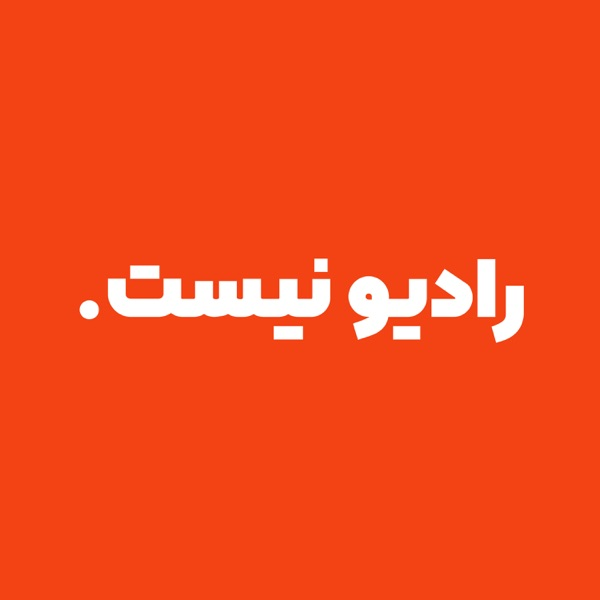
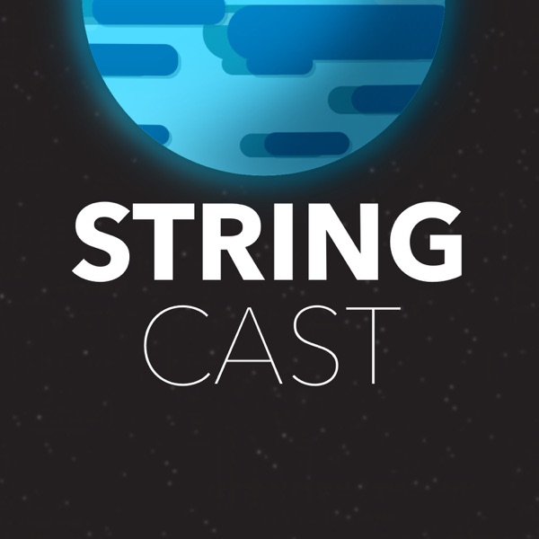
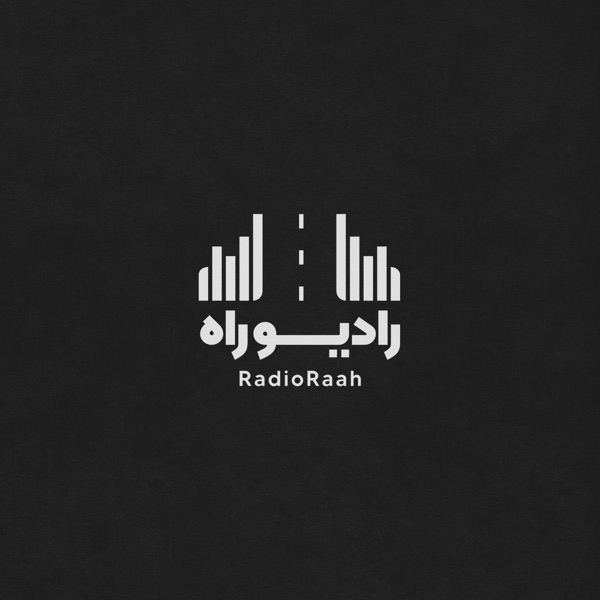
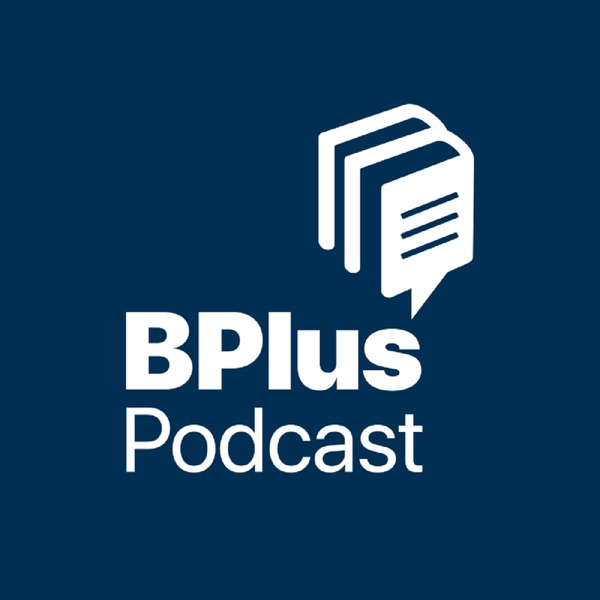

آدمها نه از طریق شغلشون و درسشون و کارایی که کردن، بلکه از طریق جسارتهایی که به خرج دادن باید شناخته بشن.
جسور جایی است برای پیدا کردن و شنیدن پادکستهای ایرانی.
دستهبندیها
پادکستها
پادکستهای فارسی که روی کستباکس منتشر شدهاند.




رادیو راه
با مجتبی شکوری؛ کنج آرامی برای خواندن، فکر کردن و جستوجوی راهی برای بهتر زیستن.
شنیدن در کستباکسرادیو مذاکره
روزنوشتههای محمدرضا شعبانعلی دربارهی روزمرگی، مسائل اجتماعی، فرهنگ، مدیریت و توسعه فردی.
شنیدن در کستباکس

جادی و رادیو گیک
آرشیو پادکستهای جادی میرمیرانی.
این کانال رسمی نیست و یکی از علاقهمندان آن را ساخته است.
شنیدن در کستباکسهمینجا بشنو
نمونهای از پخشکنندهی کستباکس: رادیو دیو.
آموزش
از ایده تا انتشار؛ مسیر کوتاه کسی که میخواهد پادکست بسازد.
-
از ایده تا اپیزود اول
موضوع، مخاطب و قالب پادکستت را مشخص کن و برای اپیزودهای اول یک تقویم ساده بنویس.
-
ضبط صدای تمیز
انتخاب میکروفون، آمادهسازی محیط ضبط و تنظیمات پایهای که کیفیت صدا را بالا میبرد.
-
تدوین با نرمافزار رایگان
حذف نویز، یکدست کردن بلندی صدا و افزودن موسیقی بدون خرج کردن برای نرمافزار.
-
انتشار و معرفی
ساخت فید RSS، انتشار روی کستباکس و معرفی پادکست به اولین شنوندهها.
ایونتها
رویدادهای پیشرو برای شنوندهها و پادکسترها. (نمونهی آموزشی؛ رویدادها واقعی نیستند.)
-
نشست هماندیشی پادکسترهای جسور
گفتوگوی باز دربارهی چالشهای ساخت پادکست فارسی و تجربههای مشترک.
-
کارگاه ضبط و تدوین صدا
تمرین عملی ضبط، پاکسازی نویز و آمادهسازی فایل نهایی برای انتشار.
-
ضبط زندهی یک اپیزود با حضور شنوندهها
یک اپیزود از اول تا آخر جلوی چشم شما ضبط میشود و در پایان پرسش و پاسخ داریم.
-
شب شنیدن؛ پخش جمعی اپیزودهای منتخب
چند اپیزود برگزیدهی جسور را کنار هم گوش میدهیم و دربارهشان حرف میزنیم.
پادکست داری؟
پادکستت را به جسور معرفی کن تا شنوندههای بیشتری پیدایش کنند.